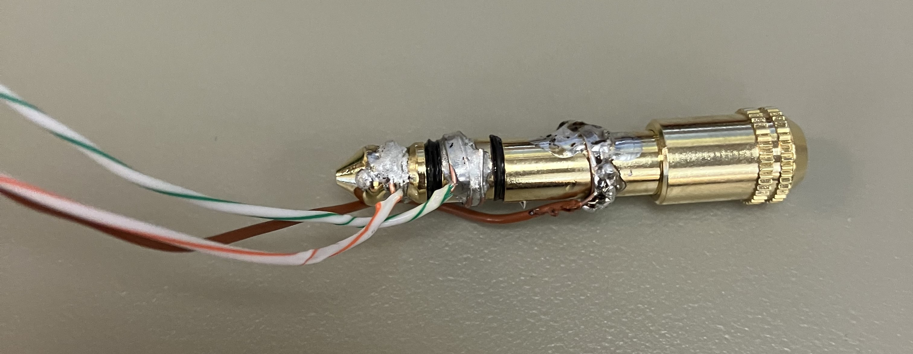
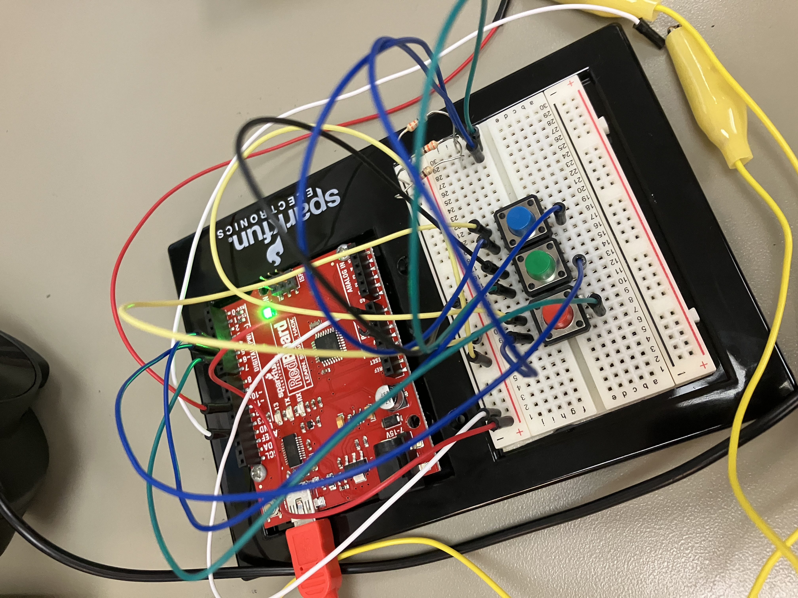

--Kavan Abayanayaka's Tech Innovations Blog--
1/26 - 1/30
This week was a slow but promising start.
The idea has changed a bit, and a large time-consuming process has been skipped,
thanks to some arduino synth code we found online.
There's still a lot to do though, both on the software and hardware sides of things.
We quickly managed to get some rudimentary sound playing through a pair of headphones at a volume that was audible from across the room without even putting them on (we continue to keep the hazardous device a safe distance from our ears).

The issue was that we had to manually hold the wires from our Arduino circuit-board to this adapter for the sound.
We tried to fix this by soldering some wires to the adapter so they would stay in place, but...
we kinda ruined the jack (a.k.a. me, the one who did the soldering here).
The headphone cable doesn't fit anymore. We have backups luckily.
After some time spent fiddling (somewhat [un]successfully) with sound output,
I realized that there was probably a bunch of code online to
steal build off of.
I found some. I didn't like it. We didn't use it.
Then, later, I found this
https://github.com/dzlonline/the_synth.
It's perfect for our project. It's a well-made sound generation library that's easy to modify and interact with.
It'll save us the trouble of making synth-code from scratch without limiting what we can do with the synth.

With the use of that library, we wrapped up the week with this little contraption.
You could say we already have a polyphonic synth! It's only got three notes though.
I might be gone for the class period most next week, as I'm the only programmer for the school's Robotix team and
I'm the only programer they have. That's okay though, with this set up Weston can do some synth-sound experimentation.
So the potentiometers we were planning on using as of last week don't work very well... Anyway,
we've decided that the keys need some physical feedback when pressed,
so flat, non-moving potentiometers like that won't cut it.
The issue is that we're not really mechanical engineers, and making
actual mechanisms for each key will be pretty difficult for us.
This, is the solution (maybe?):

The idea is that the only moving mechanical part in this design is a controller Joystick, something that we can buy and
not worry about designing or making ourselves. The connected key can be pressed down into the foam which keeps it
upright to make the Joystick read as having being pressed downwards. In addition, the key can be wiggled left and right,
making the Joystick read x-axis movement,
for a little bit for extra input! This has a lot of potential for pitch-bend, tremolo, or other effects! I'm pretty inspired
by the Osmose keyboard.
Previous Blog -- Return to Blog Menu -- Next Blog